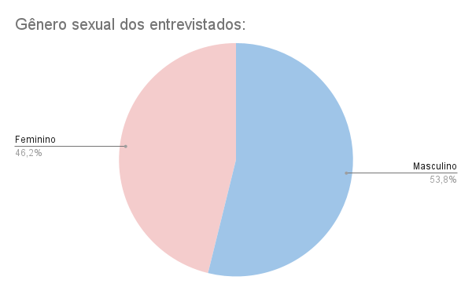
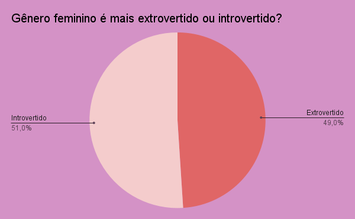

Gêneros Entrevistados:
Nesta página focamos em mostrar as diferenças dos gêneros na decisão profissional, personalidade e escolha de vidas. Levantamento do gênero entrvistados:
FEMININO
Relação do gênero feminino entre o que influência suas decisões vocacionais:
O gênero feminino de acordo com os dados levantados são mais da área de humanas sendo 54,9% das entrevistadas, e isso interfere muito nas áreas de emprego onde elas mais tem preferência como: Saúde e bem estar (29,7%), socias e humanas (13,5%), moda (5,4%), segurança púlblica (13,5%).
MACULINO
Relação do gênero masculino entre o que influência suas decisões vocacionais:
O gênero masculino de acordo com os dados levantados são mais da área de exatas sendo 57,5% dos entrevistados, e isso interfer nas escolhas de empregos futuros como: Exatas e tècnologias. Notamos no decorrer da pesquisa que a maioria das pessoas masculina querem seguir na área de tecnologia.